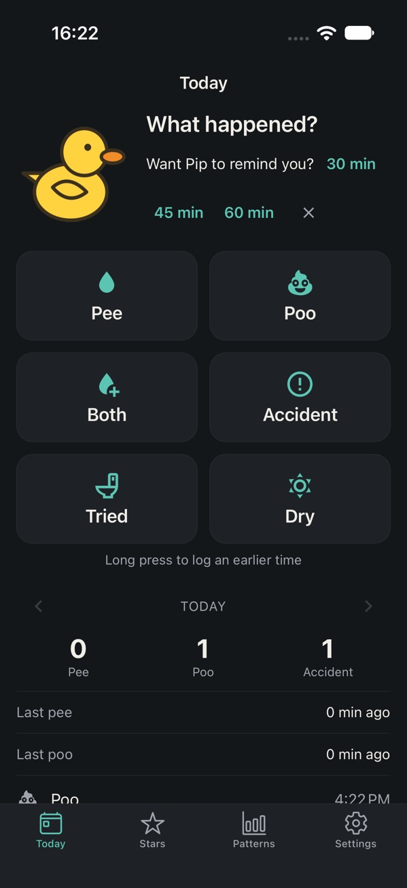

One-tap logging
- Pee, poo, both, accident, tried or dry.
- Long press to log an earlier time. Undo a mistap right away.
Pip the duck helps you keep track of what happened and when, celebrates each success with a star, and with Pro shows the patterns, so you know when to head to the potty.
iPhone. Android is not available yet.

Free to use: logging, celebrations, the star chart and reminders. Potty Pip Pro, a one-time in-app purchase, unlocks the Patterns tab, sharing a day's log and data export. No ads, no account.
Your log is stored only on your device. There is no account, no third-party analytics and no tracking. Purchases are handled by Apple or Google Play and RevenueCat. Details: Privacy Policy.
Only if you turn reminders on. They are local notifications on your phone.
No. Potty Pip stores no names, photos or identifiers of your child.
English, German, Spanish, French, Italian, Japanese, Portuguese and Turkish.
Not yet.